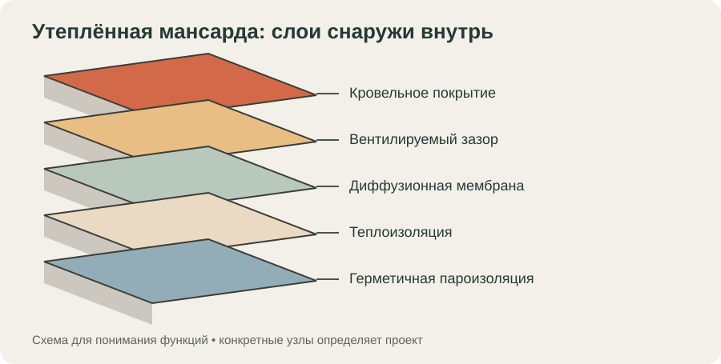

Металлочерепица: толщина стали и покрытие
На что смотреть при выборе металлочерепицы.

Металлочерепица — профилированный лист оцинкованной стали с полимерным покрытием, имитирующий черепицу. Это самый популярный кровельный материал для частных домов благодаря невысокой цене, малому весу (4–5 кг/м²) и быстрому монтажу.
Толщина стали — главный показатель качества: 0,45–0,5 мм. Цинковый слой — не менее 140–275 г/м². Защитное покрытие: полиэстер (дешёвый, 10–15 лет), матовый полиэстер, пурал (стойкий к ультрафиолету и царапинам, 25–30 лет), пластизол.
Минимальный уклон крыши для металлочерепицы — 14°. На меньших уклонах вода и снег задерживаются на стыках листов.
Недостатки: шум при дожде (решается утеплителем), много отходов на сложных крышах, необходимость вентиляционного зазора, иначе на нижней стороне листа образуется конденсат. Срок службы — 30–50 лет.
Главное за минуту
- Металлочерепица — профилированный лист оцинкованной стали с полимерным покрытием, имитирующий черепицу.
- Толщина стали — главный показатель качества: 0,45–0,5 мм.
- Минимальный уклон крыши для металлочерепицы — 14°.

Проверить перед работой
- Проверьте проектный состав кровли и назначение каждой плёнки.
- Герметично выполните внутренние примыкания и проходки.
- Сохраните предусмотренные вентиляционные зазоры и путь выхода воздуха.
Частые ошибки
- Поменять местами пароизоляцию и диффузионную мембрану.
- Перекрыть выход воздуха утеплителем или отделкой.
Видео по теме
- Теплоизоляция крыши: каменная вата и PIR · ТЕХНОНИКОЛЬ
Источники и изображения
Монтаж керамической кровельной черепицы · Clément Proust · Источник изображения · Pexels License